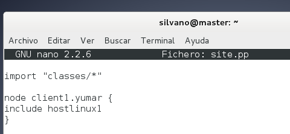

- Módulo: Administración de sistemas operativos
- Título del trabajo Gestor de infraestructura
- Componentes del grupo: Silvano Pérez Yanes y Alejandro García Yumar
- Curso Académico: 2º ASIR
- Fecha de entrega: 3 de Febrero de 2015
Para esta actividad vamos a utilizar la herramienta puppet, tanto en debian(linux), como en windows, utilizando como servidor puppet una máquina debian. Para empezar vamos a realizar dicha actividad con dos máquinas debian, configuradas correctamentes y con un nombre de grupo en común para nuestras máquinas, en nuestro caso será "yumar".


Una vez hecho, vamos a configurar el servidor puppet para el corercto funcionamiento de la otra máquina debian que se conectará via certificado de puppet.
Ahora, vamos a configurar el fichero de configuración de puppet para el cliente que se va ha conectar. Una vez terminado dichas configuraciones, realizamos un reinicio del puppet del servidor.
En el cliente debian también tiene que tener instalado el puppet, y nada más, aparte de las configuraciones básicas.
Una vez terminado dichas configuraciones, empezamos crear los cretificados para el cliente linux
Una vez registrado el cliente linux en el servidor de puppet, comprobamos si se a aplicado la configuración de hostlinux1 en el cliente.

Y otra vez registramos al cliente linux al servidor de puppet pero esta vez con con el fichero hostlinux2, para que nos aplique la configuración de dicho archivo

A continuación, pasamos a windows, en el instalamos el programa puppet. Luego en el servidor de puppet en linux creamos el fichero hostwindows1 el cual nos crea un fichero en la riaz del sistema windows


En windows, podemos configurar el fichero hosts para la correcta conectividad con el servidor linux, además de comprobar la versión de puppet con facter.


Una vez configurado tanto windows como linux para poder registrar el cliente windows en el servidor puppet.
Luego comprobamos que nos realiza las configuraciones del hostwindows, en este caso la cración de un fichero de texto.


Continuamos, esta vez con el registro del cliente windows, pero con el fichero hostwindows2, el cuál nos creará varios usuarios en diferentes grupos.


En esta actividad, principalmente los errores sufridos han sido en el cliente windows, ya que en la instalación de puppet en windows no se estaba configurando el nosmbre del servidor de puppet, una vez arreglado, no hemos tenido más problemas.